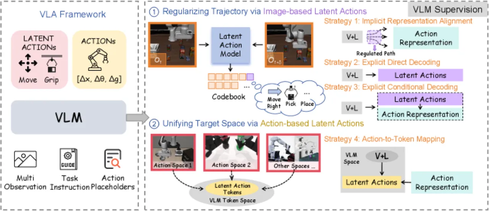
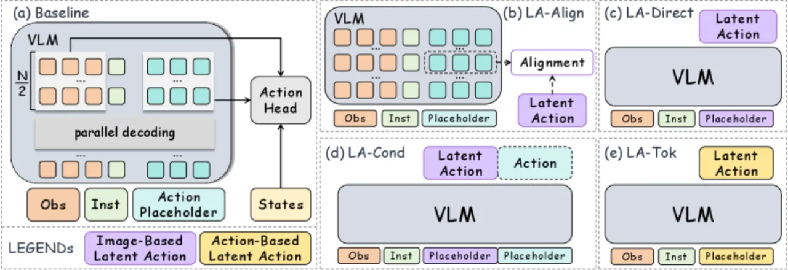
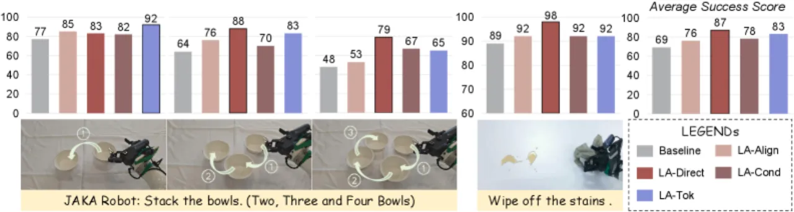
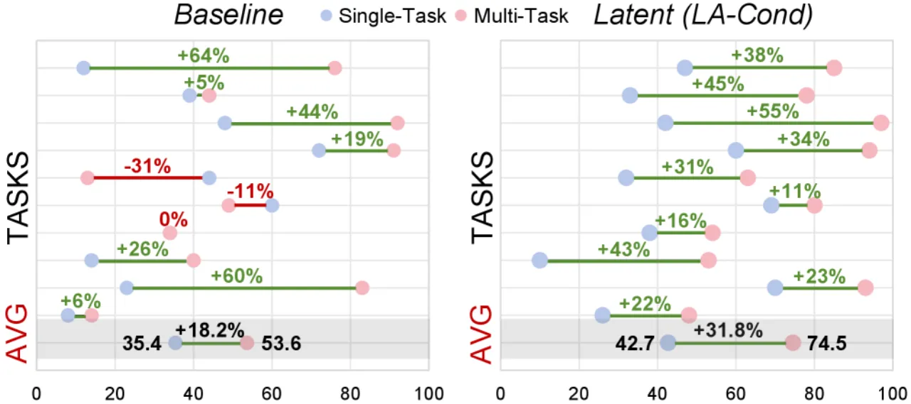

本文在统一的 VLA baseline 下，系统对比四种 latent action 监督策略：图像型（image-based）策略在长视野推理与场景泛化上表现更优，动作型（action-based）策略在复杂运动协调任务上更具优势；整体而言，直接让 VLM 预测离散 latent action token（LA-Direct / LA-Tok）的显式监督效果最强。
视觉-语言-动作模型（VLA）近年兴起，但异构动作空间（不同机器人、不同任务的动作格式各异）给策略学习带来挑战。Latent action 作为中间表示，可将视觉/动作信息压缩为统一的离散 token，从而桥接 VLM 和机器人控制。然而，latent action 的设计空间复杂——应从图像侧提取还是动作侧提取？如何与 VLM 集成？哪种监督形式最有效？这些问题缺乏系统研究。
"We investigate how different latent action supervision choices affect VLA policy learning under a unified baseline."

作者在 Qwen3-VL-2B 为骨干的统一 VLA baseline 上，从两个互补视角设计四种 latent action 集成策略，并以统一目标函数 ℒ = ℒ_action + λℒ_latent 进行训练，以隔离各策略对最终性能的影响。

图像型 latent action 使用 VQ-VAE 将相邻帧的视觉变化编码为离散 token z_t^img，捕捉场景级动态。三种集成策略：
动作型 latent action 将连续动作 chunk 压缩为离散 token z_t^act，采用频域与时域结合："FFT modeling low-frequency trends, 1D temporal convolutions capturing fast variations." Strategy 4（LA-Tok）将这些离散 token 直接作为 VLM 的监督目标，实现异构动作空间的统一表示。
所有策略共享同一骨干网络（Qwen3-VL-2B）、placeholder 设计和动作头，确保对比的公平性。
实验在三个 benchmark 上展开：仿真环境 LIBERO（长视野任务 LIBERO-Long 等 4 个子集）、RoboTwin 2.0（双臂高难度操作，20 项任务）以及真实环境 JAKA 机械臂任务（碗叠放等多步操作）。每组实验各报告成功率（%）。
| Benchmark | Baseline | LA-Align | LA-Direct | LA-Cond | LA-Tok |
|---|---|---|---|---|---|
| LIBERO 平均 | 93.1% | 97.0% | 97.1% | 96.6% | 95.5% |
| LIBERO-Long | 85.8% | 94.8% | 96.6% | 94.2% | 92.6% |
| RoboTwin 2.0 平均 | 60.5% | 70.5% | 71.8% | 73.8% | 78.0% |
图像型策略（LA-Direct）在需要长视野推理的 LIBERO-Long 上取得 +10.8% 提升（85.8% → 96.6%）；动作型策略（LA-Tok）在运动协调要求更高的 RoboTwin 2.0 上取得 +17.5% 平均提升。
消融实验表明，离散 token 监督显著优于等价连续回归变体：
"Directly supervising the VLM to predict latent actions provides a simple and consistent supervision target."


LA-Tok 仅使用 50% 数据即可达到 94.0% 成功率，而 baseline 使用全量数据（100%）才达到 80%，体现出显著的数据效率优势。
本文提出的四种集成策略（LA-Align、LA-Direct、LA-Cond、LA-Tok）基于两个视角进行系统化设计，但并不能穷尽所有可能的 latent action 集成方式，存在其他设计空间尚待探索。
实验中使用的 image-based 和 action-based latent action 模型本身的质量（如 VQ-VAE 的重建精度、量化误差）对下游 VLA 性能的影响尚未系统分析，未来需进一步研究。
真实世界实验仅在单臂 JAKA 机械臂平台上进行，未涵盖双臂或更多样化的真实硬件，策略在不同硬件平台上的泛化性有待验证。